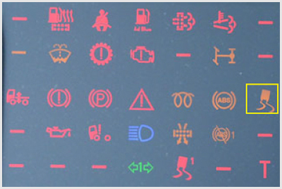

<!DOCTYPE html>
<html lang="hu">
<head>
    <meta charset="UTF-8" />
    <meta name="viewport" content="width=device-width, initial-scale=1.0" />
    <title>Elektronikus fék- és menetdinamikai rendszerek – „C” kategória - Szerkezeti és üzemeltetési ismeretek</title>
    <meta property="og:site_name" content="KRESZ teszt &ndash; „C” kategória - Szerkezeti és üzemeltetési ismeretek" />
    <meta property="og:description" content="Elektronikus fék- és menetdinamikai rendszerek kérdések és helyes válaszok („C” kategória - Szerkezeti és üzemeltetési ismeretek)" />
    <link rel="stylesheet" href="../test.css" />
</head>
<body>
    <div class="topic-header">
        <nav class="topic-breadcrumbs">
            <a href="index.html" class="crumb-link">&laquo; „C” kategória - Szerkezeti és üzemeltetési ismeretek témakörei</a>
            <span class="crumb-sep">/</span>
            <span class="crumb-current">Elektronikus fék- és menetdinamikai rendszerek</span>
            <span class="crumb-sep">/</span>
            <a href="../../index.html" class="crumb-home">Interaktív teszt &raquo;</a>
        </nav>

        <div class="topic-title-section">
            <span class="topic-badge">Témakör 23 / 24</span>
            <h2>Elektronikus fék- és menetdinamikai rendszerek <small class="topic-badge-info">(20 kérdés, vizsgán: ABS, ASR, ESP, EBS)                    (1 db., 1 pont)</small></h2>
        </div>

        <div class="topic-nav-bar">
            <a href="group-1668682129.html" class="nav-btn nav-prev-btn" title="Dobfékek, tárcsafékek, kerékfékek működtetése, utánállítása">&laquo; Előző témakör</a>
            <a href="index.html" class="nav-btn nav-hub-btn">Témakörök listája</a>
            <a href="group-1668682388.html" class="nav-btn nav-next-btn" title="Ellenőrzés, üzemeltetés, karbantartás">Következő témakör &raquo;</a>
        </div>
    </div>

    <div class="group" id="group-1668682265">
        <div class="questions">
            <div class="question" id="question-704460">
                                                                        <!-- <h4>555. Milyen járművek fékrendszere szerelhető fel blokkolásgátló rendszerrel (ABS)?</h4> -->
                        <dl>
                            <dt>555. Milyen járművek fékrendszere szerelhető fel blokkolásgátló rendszerrel (ABS)? <a href="#question-704460"><small>#704460</small></a></dt>
                                                            <dd class="correct">A hidraulikus és légfékes gépjárműveké és pótkocsiké is.</dd>
                                                            <dd class="">Csak a hidraulikus fékrendszerrel felszerelt személygépkocsiké és könnyű haszonjárműveké.</dd>
                                                            <dd class="">Csak a hidraulikus fékrendszerrel felszerelt személy- és tehergépkocsiké.</dd>
                                                            <dd class="">Csak a személygépkocsik fékrendszerei.</dd>
                                                    </dl>
                    </div>
                                                            <div class="question" id="question-704733">
                                                                        <!-- <h4>556. Ha a vontató és a pótkocsi blokkolásgátló (ABS) rendszere és annak visszajelző lámpája is működőképes, az indítókulcs elfordítása után...</h4> -->
                        <dl>
                            <dt>556. Ha a vontató és a pótkocsi blokkolásgátló (ABS) rendszere és annak visszajelző lámpája is működőképes, az indítókulcs elfordítása után... <a href="#question-704733"><small>#704733</small></a></dt>
                                                            <dd class="correct">sárga fénnyel világít, majd legkésőbb az elindulást követően elalszik.</dd>
                                                            <dd class="">nem világít, majd az elindulás után vörös fénnyel világít.</dd>
                                                            <dd class="">sárga fénnyel, folyamatosan világít a jármű leállításáig.</dd>
                                                            <dd class="">nem világít, majd csak akkor világít sárga fénnyel, ha a blokkolásgátló beavatkozik a fékezési folyamatba.</dd>
                                                    </dl>
                    </div>
                                                            <div class="question" id="question-704735">
                                                                        <!-- <h4>557. A menetdinamikai szabályozó rendszer, más néven elektronikus stabilizálóprogram (ESP)...</h4> -->
                        <dl>
                            <dt>557. A menetdinamikai szabályozó rendszer, más néven elektronikus stabilizálóprogram (ESP)... <a href="#question-704735"><small>#704735</small></a></dt>
                                                            <dd class="correct">a jármű keresztirányú dinamikájába avatkozik be stabilizáló céllal.</dd>
                                                            <dd class="">a jármű hosszirányú dinamikájába avatkozik be stabilizáló céllal.</dd>
                                                            <dd class="">egyesíti a blokkolásgátló és a kipörgésgátló rendszer feladatait.</dd>
                                                            <dd class="">a blokkolásgátló rendszer másik elnevezései.</dd>
                                                    </dl>
                    </div>
                                                            <div class="question" id="question-704929">
                                                                        <!-- <h4>558. Mi a blokkolásgátló berendezés (ABS) alkalmazásának célja?</h4> -->
                        <dl>
                            <dt>558. Mi a blokkolásgátló berendezés (ABS) alkalmazásának célja? <a href="#question-704929"><small>#704929</small></a></dt>
                                                            <dd class="correct">A kerekek gördülve fékezésének biztosításával a stabilitás és a kormányozhatóság megőrzése.</dd>
                                                            <dd class="">A fékpedálon kifejtett erőnél nagyobb mértékű fékezettség kialakulásának megakadályozása a kerékfékszerkezetekben.</dd>
                                                            <dd class="">Annak lehetővé tétele, hogy a fékhatás vészfékezéskor a lehető leggyorsabban és a legnagyobb mértékben létrejöjjön.</dd>
                                                            <dd class="">Az utasok testi épségét veszélyeztető mértékű vészfékezések megakadályozása.</dd>
                                                    </dl>
                    </div>
                                                            <div class="question" id="question-704930">
                                                                        <!-- <h4>559. Mihez igazodik a blokkolásgátlóval ellátott fék fékereje a kerekek megcsúszásának elkerülése érdekében?</h4> -->
                        <dl>
                            <dt>559. Mihez igazodik a blokkolásgátlóval ellátott fék fékereje a kerekek megcsúszásának elkerülése érdekében? <a href="#question-704930"><small>#704930</small></a></dt>
                                                            <dd class="correct">A talaj és a kerék között kialakuló tapadóerő nagyságához.</dd>
                                                            <dd class="">A jármű vagy járműszerelvény statikus tömegéhez.</dd>
                                                            <dd class="">A jármű fékezése során a dinamikus tengelyterhelés változásához.</dd>
                                                            <dd class="">A kerekek forgási sebességéhez.</dd>
                                                    </dl>
                    </div>
                                                            <div class="question" id="question-704931">
                                                                        <!-- <h4>560. Mikor világít folyamatosan a gépkocsi műszerfalán levő blokkolásgátló (ABS) ellenőrző lámpa?</h4> -->
                        <dl>
                            <dt>560. Mikor világít folyamatosan a gépkocsi műszerfalán levő blokkolásgátló (ABS) ellenőrző lámpa? <a href="#question-704931"><small>#704931</small></a></dt>
                                                            <dd class="correct">Ha a blokkolásgátló (ABS) rendszer meghibásodott.</dd>
                                                            <dd class="">Ha a blokkolásgátló (ABS) rendszer működésbe lépett intenzív fékezéskor.</dd>
                                                            <dd class="">Ha a blokkolásgátló (ABS) rendszer működőképes.</dd>
                                                    </dl>
                    </div>
                                                            <div class="question" id="question-704932">
                                                                        <!-- <h4>561. Mi a kipörgésgátló (ASR) rendszer feladata?</h4> -->
                        <dl>
                            <dt>561. Mi a kipörgésgátló (ASR) rendszer feladata? <a href="#question-704932"><small>#704932</small></a></dt>
                                                            <dd class="correct">Hirtelen, nagy gázadáskor vagy síkos úton a túl nagy vonóerő miatt bekövetkező kerékkipörgés megakadályozása.</dd>
                                                            <dd class="">A motor túl nagy fordulatszámának megakadályozása.</dd>
                                                            <dd class="">Elakadt vagy síkos úton álló jármű egy tengelyen levő kerekeinek összekapcsolása, és ezáltal a jobb vonóerőátadás biztosítása.</dd>
                                                            <dd class="">A motor lefulladásának megakadályozása.</dd>
                                                    </dl>
                    </div>
                                                            <div class="question" id="question-704934">
                                                                        <!-- <h4>562. Mit akadályoz meg a gépjárműbe szerelt menetdinamikai szabályozó rendszer, más néven elektronikus stabilizálóprogram (ESP)?</h4> -->
                        <dl>
                            <dt>562. Mit akadályoz meg a gépjárműbe szerelt menetdinamikai szabályozó rendszer, más néven elektronikus stabilizálóprogram (ESP)? <a href="#question-704934"><small>#704934</small></a></dt>
                                                            <dd class="correct">A jármű kisodródását és megpördülését.</dd>
                                                            <dd class="">A hajtott kerekek kipörgését csúszós útfelületen.</dd>
                                                            <dd class="">A kerekek blokkolását intenzív fékezés során.</dd>
                                                    </dl>
                    </div>
                                                            <div class="question" id="question-704935">
                                                                        <!-- <h4>563. Az elektronikus légfékrendszer (EBS) a vontató és a pótkocsi közötti fékerőarányokat...</h4> -->
                        <dl>
                            <dt>563. Az elektronikus légfékrendszer (EBS) a vontató és a pótkocsi közötti fékerőarányokat... <a href="#question-704935"><small>#704935</small></a></dt>
                                                            <dd class="correct">a lehető legjobban összehangolja, ezáltal nő a menetstabilitás.</dd>
                                                            <dd class="">nem tudja megváltoztatni, a vontató és a pótkocsi fékezése egymástól teljesen függetlenül történik.</dd>
                                                            <dd class="">a vezető által beállított terhelésjelek alapján állítja be.</dd>
                                                    </dl>
                    </div>
                                                            <div class="question" id="question-704936">
                                                                        <!-- <h4>564. Az elektronikus légfékrendszer (EBS) alkalmazásával a késedelmi idő a hagyományos légfékrendszerhez képest...</h4> -->
                        <dl>
                            <dt>564. Az elektronikus légfékrendszer (EBS) alkalmazásával a késedelmi idő a hagyományos légfékrendszerhez képest... <a href="#question-704936"><small>#704936</small></a></dt>
                                                            <dd class="correct">0,2-0,4 másodperccel csökkenhető.</dd>
                                                            <dd class="">nem változik.</dd>
                                                            <dd class="">1-2 másodperccel csökkenthető.</dd>
                                                            <dd class="">teljesen megszűnik.</dd>
                                                    </dl>
                    </div>
                                                            <div class="question" id="question-707535">
                                                                        <!-- <h4>565. Milyen funkciója van a blokkolásgátló rendszernek (ABS)?</h4> -->
                        <dl>
                            <dt>565. Milyen funkciója van a blokkolásgátló rendszernek (ABS)? <a href="#question-707535"><small>#707535</small></a></dt>
                                                            <dd class="correct">A kerék és a talaj közti tapadás függvényében szabályozza a fékerőt, és ezzel megakadályozza a kerekek megcsúszását.</dd>
                                                            <dd class="">A tengelyterhelés függvényében módosítja a fékerőt.</dd>
                                                            <dd class="">Csúszós útfelületen megakadályozza a hajtott kerekek kipörgését.</dd>
                                                            <dd class="">A jármű haladási sebességéhez igazítja a kerékfékerőket.</dd>
                                                    </dl>
                    </div>
                                                            <div class="question" id="question-707536">
                                                                        <!-- <h4>566. Milyen funkciója van a kipörgésgátlónak (ASR) a gépjárműveken?</h4> -->
                        <dl>
                            <dt>566. Milyen funkciója van a kipörgésgátlónak (ASR) a gépjárműveken? <a href="#question-707536"><small>#707536</small></a></dt>
                                                            <dd class="correct">Ha a vonóerő nagyobb a tapadás által megengedett értéknél, akkor megakadályozza a gépkocsi hajtott kerekeinek kipörgését.</dd>
                                                            <dd class="">Megakadályozza a gépjármű által vontatott pótkocsi becsuklását.</dd>
                               ( $        $ 0"             <�d�!d#Sw="">A!d�fferenciálmű blokjo�ásával megakadályozza a k��ldali hajuo�t kerekek különböző sebességű go�gását.</dd>
     0 `(            �0�0                 " (  �   </Dl�
                $ 0"</liV:
                  " (!   ( $                      �0    $ ,fiv clAs�-"question" id=#y�Ewtion-707537">
 `( " (!�$ r2!`� (!            $ 0"            $ 0"                     <!=-`4h4>56.�Z�2�el'ző felszerelés-e tehergépkocsikgnǩq ittC�b7szokon�a 1ebességkorlátozó?</h4> -->
                        <dl>
    ! �                  �p<dU>567. Kötelező felwzuPe�өs	e�f%bezfépkocsikon és autóbuszokon a sebeSsC�gkorlátozó? <a h�ef"#Puaction-707537"�<s/all>#707537</small></a></�t>O
! �                        " (!    �2                      <dd clas�=b!oSrectb>N��h�ny gSm�ut (pl. kk}}7fális járművukm({kf��ng!i�en.</d`>]                                        �0            0 `(<dd class="">Nem, de ajánlott<�td>
                                                            <dd class="">Csak, ha pótkocsit is vontatnak.</dd>
                                                    </dl>
                    </div>
                                                            <div class="question" id="question-707538">
                                                                        <!-- <h4>568. Általában kikapcsolhatja-e a gépjárművezető a kipörgésgátló (ASR) rendszert (illetve növelheti-e annak csúszáshatárát)?</h4> -->
                        <dl>
                            <dt>568. Általában kikapcsolhatja-e a gépjárművezető a kipörgésgátló (ASR) rendszert (illetve növelheti-e annak csúszáshatárát)? <a href="#question-707538"><small>#707538</small></a></dt>
                                                            <dd class="correct">Igen.</dd>
                                                            <dd class="">Nem.</dd>
                                                    </dl>
                    </div>
                                                            <div class="question" id="question-707539">
                                                                        <!-- <h4>569. Mi alapján dönti el a menetdinamikai szabályozó rendszer, más néven elektronikus stabilizálóprogram (ESP), hogy szükséges-e beavatkoznia a jármű üzeme során?</h4> -->
                        <dl>
                            <dt>569. Mi alapján dönti el a menetdinamikai szabályozó rendszer, más néven elektronikus stabilizálóprogram (ESP), hogy szükséges-e beavatkoznia a jármű üzeme során? <a href="#question-707539"><small>#707539</small></a></dt>
                                                            <dd class="correct">Az érzékelők jelei alapján megállapítja a járművezető szándéka szerinti mozgásállapotot és ezt összehasonlítja a jármű tényleges mozgásállapotával.</dd>
                                                            <dd class="">A GPS adatait összehasonlítja az érzékelők jeleivel.</dd>
                                                            <dd class="">A blokkolásgátló (ABS) vagy a kipörgésgátló (ASR) rendszerek működése esetén az ESP rendszer is automatikusan beavatkozik.</dd>
                                                    </dl>
                    </div>
                                                            <div class="question" id="question-707540">
                                                                        <!-- <h4>570. Kikapcsolható-e a gépjárművek ABS, ASR és ESP rendszere (vagy növelhető-e a csúszáshatáruk)?</h4> -->
                        <dl>
                            <dt>570. Kikapcsolható-e a gépjárművek ABS, ASR és ESP rendszere (vagy növelhető-e a csúszáshatáruk)? <a href="#question-707540"><small>#707540</small></a></dt>
                                                            <dd class="correct">Az ABS - terepjáró tehergépkocsik kivételével - nem, az ASR és az ESP átlalában igen.</dd>
                                                            <dd class="">Mindhárom rendszer esetében igen.</dd>
                                                            <dd class="">Egyik rendszer esetében sem.</dd>
                                                    </dl>
                    </div>
                                                            <div class="question" id="question-707542">
                                                                        <!-- <h4>571. Milyen módokon avatkozik be a kipörgésgátló (ASR) rendszer a jármű üzeme során?</h4> -->
                        <dl>
                            <dt>571. Milyen módokon avatkozik be a kipörgésgátló (ASR) rendszer a jármű üzeme során? <a href="#question-707542"><small>#707542</small></a></dt>
                                                            <dd class="correct">A kipörgő kereket fékezi és/vagy a motorteljesítményt csökkenti.</dd>
                                                            <dd class="">Kizárólag a kipörgő kerekek fékezésével avatkozik be.</dd>
                                                            <dd class="">Az üzemanyag-adagolás változtatásával szabályozza a motor teljesítményét.</dd>
                                                    </dl>
                    </div>
                                                            <div class="question" id="question-714544">
                                                                        <!-- <h4>572. Hogyan biztosítja az elektronikus légfékrendszer (EBS), hogy a fékbetétek élettartama lehetőleg azonos legyen?</h4> -->
                        <dl>
                            <dt>572. Hogyan biztosítja az elektronikus légfékrendszer (EBS), hogy a fékbetétek élettartama lehetőleg azonos legyen? <a href="#question-714544"><small>#714544</small></a></dt>
                                                            <dd class="correct">Korrigálja a fékerőfelosztást a kerékfékszerkezetektől folyamatosan érkező kopásjelek alapján.</dd>
                                                            <dd class="">Felváltva fékezi a különböző tengelyeket a beérkező kopásjelek alapján.</dd>
                                                            <dd class="">A kerékfordulatszám változásából érzékeli a fékszerkezetek állapotát, és a lassabban kopó féket időnként rövid impulzusokkal működteti.</dd>
                                                            <dd class="">A fedélzeti számítógépen keresztül jelzi, hogy a tengelyek között a fékbetéteket át kell cserélni.</dd>
                                                    </dl>
                    </div>
                                                            <div class="question" id="question-724177">
                                                                        <!-- <h4>573. Amikor a blokkolásgátló rendszer (ABS) megfelelően működik, akkor a műszerfalon található visszajelző lámpa...</h4> -->
                        <dl>
                            <dt>573. Amikor a blokkolásgátló rendszer (ABS) megfelelően működik, akkor a műszerfalon található visszajelző lámpa... <a href="#question-724177"><small>#724177</small></a></dt>
                                                            <dd class="correct">legkésőbb röviddel az elindulást követően (maximum 7 km/h sebesség elérését követően) elalszik.</dd>
                                                            <dd class="">menet közben folyamatosan világít.</dd>
                                                            <dd class="">fékezéskor világít.</dd>
                                                            <dd class="">abban az esetben világít, ha a blokkolásgátló rendszer beavatkozik a fékezési folyamatba.</dd>
                                                    </dl>
                    </div>
                                                            <div class="question" id="question-724178">
                                                                            <div class="exercise-image">
                                
                            </div>
                                                <!-- <h4>574. Mire figyelmeztet a képen a bekeretezett visszajelző lámpa?</h4> -->
                        <dl>
                            <dt>574. Mire figyelmeztet a képen a bekeretezett visszajelző lámpa? <a href="#question-724178"><small>#724178</small></a></dt>
                                                            <dd class="correct">A blokkolásgátló rendszer hibájára.</dd>
                                                            <dd class="">A blokkolásgátló rendszer beavatkozására.</dd>
                                                            <dd class="">A blokkolásgátló rendszer hibájára vagy beavatkozására.</dd>
                                                            <dd class="">Arra, hogy a vontatóhoz blokkolásgátló nélküli pótkocsit csatlakoztattak, vagy nem csatlakoztatták a felkapcsolt pótkocsi ABS kábelét.</dd>
                                                    </dl>
                    </div>
                                                            <div class="question" id="question-724179">
                                                                            <div class="exercise-image">
                                
                            </div>
                                                <!-- <h4>575. Mire figyelmeztet a képen a bekeretezett visszajelző lámpa?</h4> -->
                        <dl>
                            <dt>575. Mire figyelmeztet a képen a bekeretezett visszajelző lámpa? <a href="#question-724179"><small>#724179</small></a></dt>
                                                            <dd class="correct">A menetdinamikai szabályozórendszer (ESP) hibájára vagy beavatkozására.</dd>
                                                            <dd class="">A blokkolásgátló (ABS) hibájára vagy beavatkozására..</dd>
                                                            <dd class="">A blokkolásgátló (ABS) beavatkozására.</dd>
                                                            <dd class="">A blokkolásgátló (ABS) hibájára.</dd>
                                                    </dl>
                    </div>
                                    </div>
        </div>
    </div>

    <div class="topic-footer-nav" style="margin-top: 40px;">
        <div class="topic-nav-bar">
            <a href="group-1668682129.html" class="nav-btn nav-prev-btn" title="Dobfékek, tárcsafékek, kerékfékek működtetése, utánállítása">&laquo; Előző témakör</a>
            <a href="index.html" class="nav-btn nav-hub-btn">Témakörök listája</a>
            <a href="#top" class="nav-btn nav-top-btn" onclick="window.scrollTo({top:0,behavior:'smooth'}); return false;">^ Tetejére</a>
            <a href="group-1668682388.html" class="nav-btn nav-next-btn" title="Ellenőrzés, üzemeltetés, karbantartás">Következő témakör &raquo;</a>
        </div>
        <p style="margin-top: 24px; text-align: center;"><a href="index.html" class="back-btn"><strong>&laquo; Vissza a „C” kategória - Szerkezeti és üzemeltetési ismeretek témaköreihez</strong></a></p>
    </div>

    <script src="../search.js"></script>
</body>
</html>